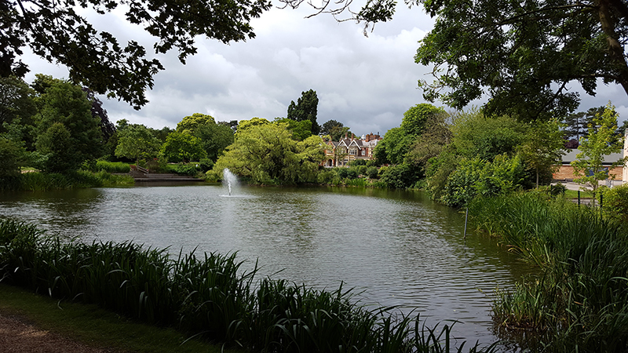

St Alban's Cathedral

St Alban's Cathedral, Hertfordshire, England
This was our local cathedral, and is the site of the longest continuing Christian worship in the UK.
Tower Bridge, London

This iconic old bridge is located right next to the Tower of London. We climbed across the top and were directly above the bridge when it opened up to allow boats through on the Queen's jubilee.
Stonehenge

This ancient stone circle stands alone on the wide Salisbury plains. It was below freezing on the day we visited!
St Andrew's

A must for all Stac students and staff visiting Scotland! The ruins are beautiful, and we visited on a rare sunny and mild day.
Lords cricket ground

As a serious sports fan, visiting the home of cricket was truly memorable. Although the cold rain all morning was not ideal for cricket.
Bletchley Park
Bletchley Park is the home of computer science. It was site of the code breakers during World War Two, and renowned mathematician and computer scientist Alan Turing worked there.
They were responsible for cracking the Nazis' Enigman code which was considered to be unbreakable. Many of the code breakers went on to make huge contributions in the field of computer science after the war finished.